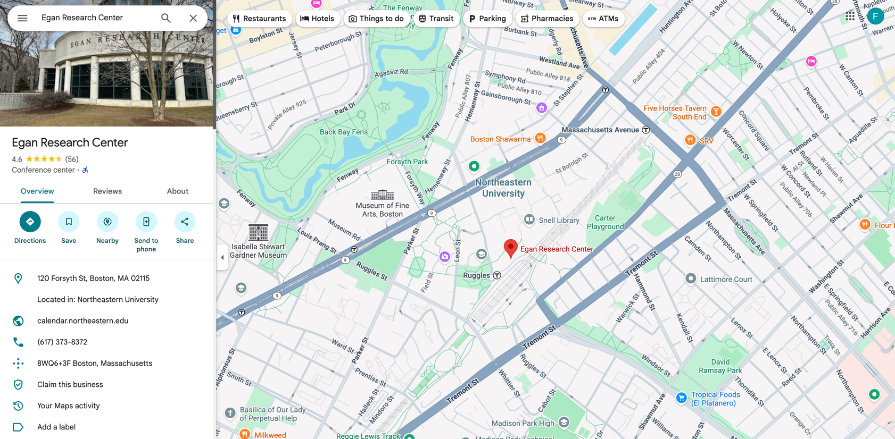
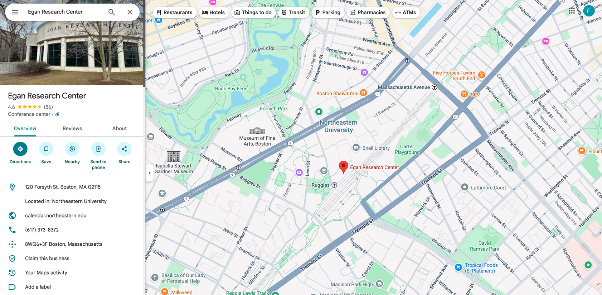

FAQ
Frequently Asked Questions
1. General Information
Are there any associated fees?
No - this event is free.
Are there any prerequisites to take part in any of the activities?
No - there are no prerequisites.
Why should I participate in a hackathon?
Hackathons are a great way to learn new skills that will be useful in your everyday work as a researcher. Beyond that, hackathons are also an opportunity to meet, collaborate and exchange best practices with members of the community.
Is there a registration deadline for the Brainhack?
No. However, our event space has a strict capacity, so space is limited.
Will this event have a virtual option?
Yes. However, please note that in previous years over 95% of attendees have participated in person. Additionally, while we will do our best to actively monitor virtual streams, some event spaces are not equipped with cameras and/or microphones.
Who should I reach out to if I have questions?
Please email Alex Fischbach <fischbach.a@northeastern.edu>
2. Hackathon Projects
How is this year's Brainhack different from previous years?
This year, we are incorporating hackathon projects into the three-day schedule.
What is a hackathon project?
A project developed during the event, where participants work in teams to create a tool, analysis, experiment, or idea related to the hackathon's theme. Projects can range from coding and data analysis to designing workflows, visualizations, or community resources. The focus is on creativity, learning, and collaboration rather than polished end products or technical coding/programming skills.
I don't want to submit/pitch a project, but I want to contribute. How does this work?
At the hackathon, each project leader will pitch at the beginning of the event. Then you will have the possibility to chat with the project leaders before you decide which projects to join.
Submitting a Hackathon Project
Who can submit a hackathon project?
Anyone registered for Brainhack can submit a project to the project pool. It might be either a project you are already working on and would like help with or a completely new project you would like to start.
Where can I find examples of previous brainhack projects?
To see brainhack project examples from prior hackathons,
click here.
I want to submit a hackathon project. What information do you need?
In this Google form there will be a section that asks you to provide: (1) the title of your project and (2) a description of your project (1-2 sentences).
Does my project idea need to be fully formed?
No! Brainhack projects are typically broad/general at the beginning, and then become more refined throughout the hackathon, as other collaborators contribute to the project.
What is the deadline for project submission?
We will close project submission before the Brainhack starts, but we recommend you send a draft submission earlier, if possible.

 
